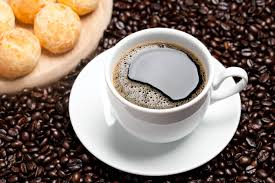
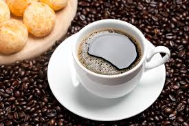

melhores cafe do mundo
daonde vem o cafe?

Café ácido da Etiópia Os melhores cafés do mundo se cultivam na Etiópia e, por ano, são colhidos de 200 a 500 toneladas de grãos. Em Yirgacheffe e Gedeo, zonas do sul do país, é produzido um terço da produção da Etiópia e uma de suas principais características é o toque ácido
 
